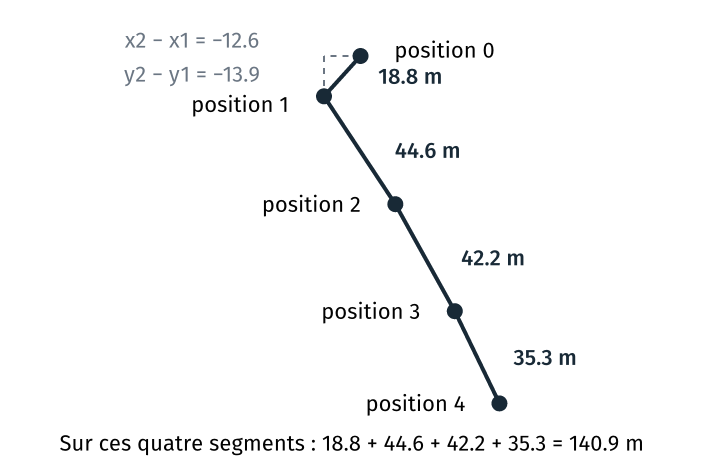

TD 4a — Un script Python, pas à pas#
Note
Les fichiers des TD de la séance sont dans l’archive info01-cours4.zip.
Ce guide a trois parties. La présentation décrit le programme de départ, le programme à obtenir et la méthode de travail. L’énoncé donne, pour chaque étape, l’objectif, les consignes et le test à lancer. Les solutions donnent le code de chaque étape, modification par modification, avec son explication.
Aux TD 3a et 3b, le code à écrire était donné. Dans ce TD, vous l’écrivez à partir des consignes, qui en donnent une partie. Pour chaque étape, écrire d’abord le code, puis lancer le test. Lire ensuite la solution, pour vérifier son code ou pour avancer si l’essai n’aboutit pas.
Le code de ce guide se copie depuis guide_4a_trace.html, ouvert dans un
navigateur, ou depuis guide.ipynb, ouvert dans JupyterLab. Copié depuis le
PDF, il perd ses indentations.
Présentation du TD#
Objectif du TD#
Le programme#
Le TD part de stats_trace.py, le programme altitudes.py du TD 3b sous un autre
nom. Ce programme lit une trace GPS dans un fichier CSV, puis affiche ses altitudes
extrêmes et son dénivelé cumulé. Le TD lui ajoute le calcul de la distance
parcourue, puis celui de la vitesse moyenne.
Une fois corrigées les deux erreurs du programme de départ, le programme affiche :
$ python stats_trace.py trace.csv
altitude minimale : 78.8 m
altitude maximale : 129.5 m
max - min : 50.7 m
cumul en hausse : 98.4 m
cumul en baisse : 50.3 m
À la fin du TD, deux options de la ligne de commande ajoutent les deux résultats :
$ python stats_trace.py trace.csv --distance --vitesse
altitude minimale : 78.8 m
altitude maximale : 129.5 m
max - min : 50.7 m
cumul en hausse : 98.4 m
cumul en baisse : 50.3 m
distance parcourue : 1906.7 m
vitesse moyenne : 1.08 m/s, soit 3.9 km/h
La trace GPS#
trace.csv contient une position toutes les 30 secondes :
X,Y,ele,time
670307.7,6812407.3,79.6,2026/10/04 08:00:00+00
670295.1,6812393.4,78.8,2026/10/04 08:00:30+00
670319.7,6812356.2,79.9,2026/10/04 08:01:00+00
…
671847.8,6812231.5,127.7,2026/10/04 08:29:30+00
X, Y : Lambert-93, en mètres. ele : altitude, en mètres. time : date et heure
UTC. La trace simule une marche sur un chemin des gorges de Franchard, en forêt de
Fontainebleau : le chemin et les altitudes viennent de l’IGN, la vitesse et le bruit
de mesure sont simulés.
Deux positions successives forment un segment. La distance parcourue est la somme des longueurs des segments, et la vitesse moyenne est cette distance divisée par le temps total.

Matériel du TD#
Fichier |
Emplacement |
Usage |
|---|---|---|
|
|
l’énoncé et les solutions, le code à copier |
|
|
le programme de départ, avec deux erreurs de syntaxe à corriger |
|
|
deux traces GPS, de 60 et 50 positions |
|
|
un modèle de README à adapter et compléter (étape B7) |
trace_2.csv simule de la même façon une marche de la gare de Noisy-Champs à
Geodata Paris.
Méthode de travail#
Un test à chaque étape#
À la fin de chaque étape, le programme s’exécute sans erreur, et une commande de test montre si la modification est juste. Une option s’écrit dans cet ordre : d’abord sa déclaration, avec un message à la place du calcul ; puis les calculs intermédiaires, avec des affichages provisoires qui permettent de les contrôler ; enfin le résultat, une fois ces affichages retirés.
Pour l’option --distance, la sortie de python stats_trace.py trace.csv --distance
se termine ainsi :
À la fin de l’étape |
Lignes après |
|---|---|
B2 |
|
B3 |
|
B4 |
|
B5 |
|
Allen Downey décrit cette méthode dans Think Python, section 5.2, sous le nom de développement incrémental, sur le même calcul de distance.
Une étape se termine par ces opérations :
Enregistrer le fichier (
Ctrl+S).Lancer la commande de test, par exemple
python stats_trace.py trace.csv --distance, puis comparer la sortie à celle de l’énoncé.Faire le commit de l’étape, en deux commandes :
git add stats_trace.py, puisgit commit -m "…".
Recopier tels quels les textes de la sortie de l’énoncé : la comparaison ne montre alors que les vraies différences. Ces textes sont écrits sans accent : selon le terminal, Python n’écrit pas les accents de la même façon.
Échec d’une étape. git status montre les fichiers modifiés depuis le
dernier commit. git diff montre les lignes modifiées (q pour quitter).
git restore stats_trace.py remet le fichier dans l’état du dernier commit.
Les étapes#
La partie A, étapes A1 à A3, dure 30 minutes. La partie B, étapes B1 à B6, dure 75 minutes. Les étapes B7 et B8 sont facultatives.
Énoncé |
Objectif |
Commits à la fin |
Solution |
|---|---|---|---|
créer le dossier du projet dans le terminal |
0 |
||
ouvrir le projet dans VS Code |
0 |
||
versionner le programme de départ |
1 |
||
lire un message d’erreur, corriger le programme |
3 |
||
ajouter l’option |
4 |
||
lire les positions X et Y de la trace, en tuples |
5 |
||
écrire la fonction |
6 |
||
écrire la fonction |
7 |
||
ajouter l’option |
8 |
||
B7 (facultative) |
écrire un README, poser une étiquette |
9 |
|
B8 (facultative) |
calculer la distance avec numpy |
10 |
Les notions employées#
Notion |
Vue au |
Employée aux étapes |
|---|---|---|
le terminal : |
cours 1 |
A1 |
VS Code et son terminal |
cours 2 |
A2 et les suivantes |
git : |
cours 2 |
A3 et les suivantes |
les messages d’erreur de Python |
cours 2 |
B1 |
|
cours 2 |
B2, B3 et B5 |
un README |
cours 2 |
B7 |
|
cours 3 |
B2 et B3 |
un tuple |
présenté à l’étape B3 |
B3 à B6 |
une fonction : |
présentée à l’étape B4 |
B4 à B6 |
la bibliothèque standard : |
cours 3 |
B4 et B6 |
numpy, un tableau |
présentés à l’étape B8 |
B8 |
Énoncé#
Les étapes A1 à A3 préparent le projet. Les étapes B1 à B6 modifient le programme, comme l’étape facultative B8.
Étape A1 · Dossier du projet#
Objectif : créer le dossier du projet,
travail/stats_trace, par des commandes, et y copierstats_trace.py,trace.csvettrace_2.csv.
Le projet est un dossier à part, dans travail/ : les fichiers de depart/ restent
tels qu’ils ont été livrés.
Consignes
Copier l’archive
info01-cours4.zipdeformationTempdans le dossierinfo01du Bureau.Ouvrir Git Bash depuis le menu Démarrer.
Aller dans le dossier
~/Desktop/info01, puis décompresser l’archive.Aller dans le dossier du TD,
cours4/4a_trace.Créer le dossier du projet,
travail/stats_trace.Copier
depart/stats_trace.pydans ce dossier.Copier les deux traces de
depart/dans ce dossier, en une seule commande, avec le motif*.csv.
Commandes possibles
Commande |
Effet |
|---|---|
|
entre dans le dossier |
|
liste le contenu du dossier |
|
décompresse l’archive dans le dossier courant |
|
crée un dossier |
|
copie un fichier |
|
désigne tous les fichiers dont le nom se termine par |
Test
ls travail/stats_trace affiche stats_trace.py, trace.csv et trace_2.csv.
Si cp affiche No such file or directory, relire le chemin : la touche Tab
complète les noms de dossiers et de fichiers.
Solution : étape A1.
Étape A2 · Projet dans VS Code#
Objectif : ouvrir le dossier du projet dans VS Code, avec un terminal Git Bash dans ce dossier.
Consignes
Lancer VS Code depuis le menu Démarrer.
Ouvrir le dossier du projet : menu File, Open Folder…,
Desktop\info01\cours4\4a_trace\travail\stats_trace, puis « Sélectionner un dossier ». Si VS Code demande si l’on fait confiance aux auteurs des fichiers, répondre « Yes, I trust the authors ».Ouvrir un terminal : menu Terminal, New Terminal.
Dans l’explorateur de VS Code, à gauche, ouvrir
stats_trace.py.
Test
L’invite du terminal est :
(base)
eleve@POSTE MINGW64 ~/Desktop/info01/cours4/4a_trace/travail/stats_trace
$
Dans stats_trace.py, chaque espace du code apparaît comme un point gris, et chaque
tabulation comme une flèche.
Si l’invite ou l’affichage diffèrent, la solution de l’étape A2 donne le réglage à refaire.
Étape A3 · Dépôt git#
Objectif : créer le dépôt git du projet, exclure
resume.txtavec.gitignore, et enregistrerstats_trace.pyet les deux traces dans un premier commit.
À chaque lancement, le programme ajoute une ligne au fichier resume.txt (TD 3b).
Ce fichier n’est pas versionné, car le programme le modifie à chaque lancement. Le fichier
.gitignore donne la liste des fichiers et des dossiers que git ne suit pas, un par
ligne.
Consignes
Dans le terminal de VS Code, créer le dépôt dans le dossier du projet.
Indiquer son nom et son adresse électronique, pour ce dépôt seulement.
Dans l’explorateur de VS Code, créer un fichier nommé
.gitignore(icône New File), y écrire la ligneresume.txt, puis enregistrer (Ctrl+S).Afficher l’état du dépôt.
Faire le premier commit, avec tous les fichiers et le message
Le programme de départ et les traces.Afficher l’historique.
Commandes possibles
Commande |
Effet |
|---|---|
|
crée le dépôt dans le dossier courant |
|
le nom qui signe les commits, pour ce dépôt ; de même |
|
les fichiers modifiés depuis le dernier commit |
|
ajoute au prochain commit les fichiers du dossier courant |
|
enregistre le commit, avec ce message |
|
l’historique, une ligne par commit |
Test
Après le commit, git log --oneline affiche une ligne.
Solution : étape A3.
Étape B1 · Correction du programme de départ#
Objectif : lire un message d’erreur de Python et corriger la ligne qu’il désigne. Le programme de départ contient deux erreurs.
Consignes
Dans le terminal, lancer le programme :
python stats_trace.py trace.csv.Lire le message d’erreur. Il donne le fichier et le numéro de la ligne, recopie la ligne, puis nomme l’erreur.
Dans VS Code, corriger cette ligne, puis enregistrer le fichier (
Ctrl+S).Faire le commit de la correction, avec un message qui la décrit :
git add stats_trace.py, puisgit commit -m "Correction : …".Relancer le programme, puis refaire les consignes 2 à 4 sur la seconde erreur.
Test
$ python stats_trace.py trace.csv
altitude minimale : 78.8 m
altitude maximale : 129.5 m
max - min : 50.7 m
cumul en hausse : 98.4 m
cumul en baisse : 50.3 m
git log --oneline affiche trois lignes, une par commit.
Solution : étape B1.
Étape B2 · Option de distance#
Objectif : ajouter au programme l’option
--distance, qui affiche pour l’instant le messagedistance : calcul manquant.
Le calcul est écrit aux étapes B3 à B5. Déclarée dès cette étape, l’option permet de tester ces trois étapes avec la même commande.
Une option sans valeur se déclare comme l’option --seuil du TD 3b, avec
action="store_true" à la place de type et de default :
analyseur.add_argument("--distance", action="store_true", help="…")
Après parse_args, options.distance vaut True quand la commande contient
--distance, et False sinon. Le bloc if options.distance: ne s’exécute donc que
si la commande contient l’option.
Consignes
Dans
stats_trace.py, avant la ligneoptions = analyseur.parse_args(), déclarer l’option--distance, avec le texte d’aideaffiche la distance parcourue.À la fin du fichier, ajouter le bloc
if options.distance:, qui affichedistance : calcul manquant.Enregistrer le fichier.
Test
Avec l’option, le message s’affiche à la fin de la sortie :
$ python stats_trace.py trace.csv --distance
altitude minimale : 78.8 m
altitude maximale : 129.5 m
max - min : 50.7 m
cumul en hausse : 98.4 m
cumul en baisse : 50.3 m
distance : calcul manquant
Sans l’option, python stats_trace.py trace.csv affiche les cinq lignes de l’étape
B1, sans le message.
python stats_trace.py --help décrit l’option :
--distance affiche la distance parcourue
Commit
git add stats_trace.py
git commit -m "L'option --distance, sans le calcul"
Solution : étape B2.
Étape B3 · Lecture des positions X et Y#
Objectif : garder dans la liste
pointsun tuple(x, y, altitude)par position de la trace, quand l’option--distanceest donnée, et contrôler les valeurs lues.
Le programme découpe déjà chaque ligne de la trace en x, y, ele et time, mais
il ne garde que ele, dans la liste altitudes.
Un tuple regroupe plusieurs valeurs, entre parenthèses. Dans le programme, une position de la trace est un tuple de trois nombres :
point = (670307.7, 6812407.3, 79.6)
print(point[0]) # affiche 670307.7, la première valeur
x, y, altitude = point # sépare les trois valeurs
La liste points contient un tuple par position. Les coordonnées ne servent qu’au calcul
de la distance : la boucle ne les garde que si l’option --distance est donnée.
Consignes
Sous la ligne
altitudes = [], créer une liste vide,points.Dans la boucle de lecture, sous la ligne
altitudes.append(float(ele)), ajouter un blocif options.distance:.Dans ce bloc, convertir
x,yeteleen nombres avecfloat, puis ajouter àpointsle tuple de ces trois nombres.Dans le bloc
if options.distance:de la fin du fichier, au-dessus du message, afficher provisoirementpositions lues :, suivi delen(points).Sous cette ligne, afficher provisoirement
position 0 :, suivi depoints[0].Enregistrer le fichier.
Test
$ python stats_trace.py trace.csv --distance
altitude minimale : 78.8 m
altitude maximale : 129.5 m
max - min : 50.7 m
cumul en hausse : 98.4 m
cumul en baisse : 50.3 m
positions lues : 60
position 0 : (670307.7, 6812407.3, 79.6)
distance : calcul manquant
Ouvrir trace.csv dans VS Code, puis vérifier que la ligne 2 commence par
670307.7,6812407.3,79.6 et que la dernière position est à la ligne 61. Des guillemets
autour des valeurs, ('670307.7', '6812407.3', '79.6'), montrent que float manque.
python stats_trace.py trace_2.csv --distance affiche positions lues : 50.
Commit
git add stats_trace.py
git commit -m "Les positions de la trace"
Solution : étape B3.
Étape B4 · Distance entre deux points#
Objectif : écrire la fonction
distance_entre(point1, point2), qui renvoie la distance horizontale entre deux points(x, y, altitude), et l’essayer sur un cas dont le résultat est connu.
len et min, employées depuis le cours 2, sont des fonctions fournies par Python.
def permet d’en écrire de nouvelles. Les paramètres d’une fonction reçoivent les
valeurs données à l’appel, et return renvoie le résultat à l’endroit de l’appel.
Une fonction s’écrit avant son premier appel, car Python exécute le fichier de haut
en bas. Ce programme affiche ecart : 23.6 m :
def ecart(a, b):
"""La différence entre deux valeurs."""
return b - a
resultat = ecart(79.6, 103.2)
print(f"ecart : {resultat:.1f} m")
Les coordonnées x et y sont en mètres. La distance horizontale entre deux points
est l’hypoténuse du triangle rectangle de côtés x2 - x1 et y2 - y1, comme sur la
figure de la présentation : √((x2 − x1)² + (y2 − y1)²). L’altitude n’entre pas dans le
calcul. En Python, ** élève à une puissance : 3 ** 2 vaut 9. math.sqrt donne la
racine carrée, après import math.
Étape B4 · Fonction distance_entre#
Consignes
En tête de
stats_trace.py, ajouter la ligneimport math.Sous les lignes
import, déclarer la fonctiondistance_entre(point1, point2).Dans la fonction, séparer les trois valeurs de chaque point :
x1, y1, altitude1 = point1, puis de même pourpoint2.Renvoyer la distance avec
return.
Étape B4 · Essai de la fonction#
Consignes
Dans le bloc
if options.distance:, retirer les deux affichages provisoires de l’étape B3.À leur place, afficher provisoirement
essai, 5.0 attendu :, suivi dedistance_entre((0, 0, 0), (3, 4, 0)). Le triangle de côtés 3 et 4 a une hypoténuse de longueur 5.Sous cette ligne, appeler
distance_entreavecpoints[0]etpoints[1], et garder le résultat dans la variablepremier_segment.Afficher provisoirement
premier segment :, suivi depremier_segmentavec un chiffre après la virgule, puism.Enregistrer le fichier.
Test
$ python stats_trace.py trace.csv --distance
altitude minimale : 78.8 m
altitude maximale : 129.5 m
max - min : 50.7 m
cumul en hausse : 98.4 m
cumul en baisse : 50.3 m
essai, 5.0 attendu : 5.0
premier segment : 18.8 m
distance : calcul manquant
Sur les deux premières lignes de la trace, x2 - x1 vaut -12,6 et y2 - y1 vaut
-13,9. À la calculatrice, √(12,6² + 13,9²) donne 18,8.
Si la sortie diffère, ce tableau donne les causes les plus fréquentes :
Sortie |
Cause |
|---|---|
|
la fonction est écrite après son appel |
|
la ligne |
|
la fonction ne contient pas |
|
un point de l’essai est écrit avec deux valeurs, |
|
|
Commit
git add stats_trace.py
git commit -m "La fonction distance_entre"
Solution : étape B4.
Étape B5 · Distance parcourue#
Objectif : écrire la fonction
distance_parcourue(points), qui calcule la somme des longueurs des segments, puis afficher le résultat final.
La position 0 n’a pas de position précédente : la boucle commence donc à i = 1, et
points[i - 1] désigne la position précédente. Le TD 2c parcourait les altitudes de
la même façon.
Étape B5 · Fonction distance_parcourue#
Consignes
Sous
distance_entre, déclarer la fonctiondistance_parcourue(points).Dans la fonction, créer la variable
total, qui vaut 0.Écrire la boucle :
for i in range(1, len(points)):.Dans la boucle, appeler
distance_entreavecpoints[i - 1]etpoints[i], et garder le résultat dans la variablesegment.Dans la boucle, ajouter
segmentàtotal.Dans la boucle, afficher provisoirement
position, suivi dei, puis, cumul :, suivi detotalavec un chiffre après la virgule.Après la boucle, au niveau de la ligne
for, renvoyertotalavecreturn.
Étape B5 · Appel de la fonction#
Consignes
Dans le bloc
if options.distance:, retirer tout le contenu.À la place, écrire
distance = distance_parcourue(points).Afficher
distance parcourue :, suivi dedistanceavec un chiffre après la virgule, puism.Enregistrer le fichier.
Test
$ python stats_trace.py trace.csv --distance
altitude minimale : 78.8 m
altitude maximale : 129.5 m
max - min : 50.7 m
cumul en hausse : 98.4 m
cumul en baisse : 50.3 m
position 1, cumul : 18.8
position 2, cumul : 63.4
position 3, cumul : 105.6
…
position 59, cumul : 1906.7
distance parcourue : 1906.7 m
La première valeur est celle du premier segment, à l’étape B4. La valeur augmente
ensuite de 15 à 50 m à chaque ligne, 32 m en moyenne. Si la sortie s’arrête à position 1, avec
distance parcourue : 18.8 m, le return est dans la boucle.
Étape B5 · Résultat final#
Consignes
Retirer le
printde la boucle.Enregistrer le fichier.
Test
$ python stats_trace.py trace.csv --distance
altitude minimale : 78.8 m
altitude maximale : 129.5 m
max - min : 50.7 m
cumul en hausse : 98.4 m
cumul en baisse : 50.3 m
distance parcourue : 1906.7 m
La trace compte 59 segments d’environ 32 m, et 59 × 32 = 1888 : le résultat a le bon ordre de grandeur.
python stats_trace.py trace_2.csv --distance se termine par
distance parcourue : 632.3 m.
Commit
git add stats_trace.py
git commit -m "Le calcul de la distance parcourue"
Solution : étape B5.
Étape B6 · Calcul de la vitesse moyenne#
Objectif : ajouter l’option
--vitesse, qui affiche la vitesse moyenne, dans le même ordre que pour la distance : l’option, le calcul intermédiaire, puis le résultat.
La vitesse moyenne est la distance parcourue divisée par le temps total.
Étape B6 · Option de vitesse#
Consignes
Avant la ligne
options = analyseur.parse_args(), déclarer l’option--vitesse, avec le texte d’aideaffiche la vitesse moyenne.À la fin du fichier, ajouter le bloc
if options.vitesse:, qui affichevitesse : calcul manquant.Enregistrer le fichier.
Test
python stats_trace.py trace.csv --vitesse se termine par
vitesse : calcul manquant.
Étape B6 · Fonction secondes_ecoulees#
La colonne time contient la date et l’heure de chaque position, sous forme de
texte, et Python ne peut pas soustraire deux textes. Le module datetime, de la
bibliothèque standard livrée avec Python (cours 3), convertit un texte en date avec datetime.strptime. La
différence de deux dates est une durée, et sa méthode total_seconds renvoie le
nombre de secondes. Ce programme affiche 30.0 :
from datetime import datetime
FORMAT_TEMPS = "%Y/%m/%d %H:%M:%S+00"
debut = datetime.strptime("2026/10/04 08:00:00+00", FORMAT_TEMPS)
fin = datetime.strptime("2026/10/04 08:00:30+00", FORMAT_TEMPS)
print((fin - debut).total_seconds())
FORMAT_TEMPS décrit le texte de la colonne time : %Y désigne l’année, %m le
mois, %d le jour, %H l’heure, %M les minutes et %S les secondes. +00 indique
l’heure UTC, et s’écrit tel quel dans le format.
Consignes
Sous la ligne
import math, ajouter la lignefrom datetime import datetime.Sous les lignes
import, ajouter la ligneFORMAT_TEMPS = "%Y/%m/%d %H:%M:%S+00".Sous
distance_parcourue, écrire la fonctionsecondes_ecoulees(debut, fin), qui convertitdebutetfinen dates, puis renvoie le temps qui les sépare, en secondes.Dans le bloc
if options.vitesse:, au-dessus du message, garder dansessaile résultat desecondes_ecoulees("2026/10/04 08:00:00+00", "2026/10/04 08:00:30+00").Sous cette ligne, afficher provisoirement
essai, 30.0 attendu :, suivi deessai.Enregistrer le fichier.
Test
python stats_trace.py trace.csv --vitesse se termine par ces deux lignes :
essai, 30.0 attendu : 30.0
vitesse : calcul manquant
Étape B6 · Temps total#
Consignes
Sous la ligne
points = [], créer une liste vide,temps.Dans la boucle de lecture, remplacer la condition
if options.distance:parif options.distance or options.vitesse:. La vitesse a aussi besoin des positions.Dans ce bloc, ajouter
timeàtemps, sans le convertir.Dans le bloc
if options.vitesse:de la fin du fichier, retirer les deux lignes de l’essai.À leur place, calculer
temps_totalavecsecondes_ecoulees, surtemps[0]ettemps[-1].Sous cette ligne, afficher provisoirement
temps total :, suivi detemps_totalsans chiffre après la virgule (:.0f), puiss.Enregistrer le fichier.
Test
python stats_trace.py trace.csv --vitesse se termine par ces deux lignes :
temps total : 1770 s
vitesse : calcul manquant
temps[-1] désigne le dernier élément de la liste temps. La première position de
trace.csv finit par 08:00:00+00, et la dernière par 08:29:30+00, soit 29 min 30 s.
Étape B6 · Vitesse moyenne#
Une vitesse en m/s, multipliée par 3,6, donne des km/h.
Consignes
Dans le bloc
if options.vitesse:, retirer les deuxprint.Sous le calcul de
temps_total, écriredistance = distance_parcourue(points).Diviser
distancepartemps_total, et garder le résultat dans la variablevitesse.Afficher
vitesse moyenne :, suivi devitesseavec deux chiffres après la virgule, puism/s, soit, suivi devitesse * 3.6avec un chiffre après la virgule, puiskm/h.Enregistrer le fichier.
Test
$ python stats_trace.py trace.csv --distance --vitesse
altitude minimale : 78.8 m
altitude maximale : 129.5 m
max - min : 50.7 m
cumul en hausse : 98.4 m
cumul en baisse : 50.3 m
distance parcourue : 1906.7 m
vitesse moyenne : 1.08 m/s, soit 3.9 km/h
python stats_trace.py trace.csv --vitesse, sans --distance, se termine par la même
ligne vitesse moyenne.
À la calculatrice, 1906,7 / 1770 donne 1,08.
python stats_trace.py trace_2.csv --vitesse se termine par
vitesse moyenne : 1.29 m/s, soit 4.6 km/h.
Commit
git add stats_trace.py
git commit -m "L'option --vitesse"
git log --oneline affiche huit lignes.
Solution : étape B6.
Étape B7 (facultative) · README et étiquette#
Objectif : permettre à une autre personne de lancer le programme, et nommer la version finale.
Consignes
Copier le modèle de README dans le projet :
cp ../../depart/modeles/README.md .Ouvrir
README.mddans VS Code et remplacer chaque passage « (À compléter …) ».Ctrl+Maj+Vaffiche l’aperçu.Coller chaque commande du README dans le terminal, et vérifier qu’elle fonctionne.
Faire le commit du README :
git add README.md, puisgit commit -m "Un README".Poser l’étiquette
v1.0sur ce commit :git tag -a v1.0 -m "Première version".
Test
git log --oneline affiche neuf lignes, la première marquée tag: v1.0.
Solution : étape B7.
Étape B8 (facultative) · Distance calculée avec numpy#
Objectif : calculer la distance parcourue avec la bibliothèque numpy, à partir de deux listes,
liste_xetliste_y, et comparer le résultat à celui dedistance_parcourue.
numpy calcule sur des tableaux de nombres. Une opération s’applique à chaque élément du
tableau, sans boucle écrite dans le programme. Ce mode de calcul s’appelle le calcul
vectoriel.
np.array construit un tableau à partir d’une liste, et np.diff renvoie les
différences entre éléments successifs. Ce programme affiche [3. 0.], puis [9. 0.] :
import numpy as np
x = np.array([0.0, 3.0, 3.0])
print(np.diff(x))
print(np.diff(x) ** 2)
Étape B8 (facultative) · Listes des coordonnées#
numpy calcule sur une colonne entière : il faut une liste par coordonnée, liste_x et
liste_y, en plus des tuples. numpy est installé avec Anaconda, dans base.
Consignes
Sous la ligne
from pathlib import Path, ajouter une ligne vide, puis la ligneimport numpy as np.Sous la ligne
temps = [], créer deux listes vides,liste_xetliste_y.Dans le bloc
if options.distance or options.vitesse:de la boucle de lecture, ajouterfloat(x)àliste_xetfloat(y)àliste_y.Enregistrer le fichier, puis lancer
python stats_trace.py trace.csv --distance.
Test
Le programme s’exécute sans erreur.
Étape B8 (facultative) · Calcul avec numpy#
Consignes
Sous
distance_parcourue, écrire la fonctiondistance_parcourue_numpy(liste_x, liste_y), qui convertit les deux listes en tableauxxety, puis renvoienp.sum(np.sqrt(np.diff(x) ** 2 + np.diff(y) ** 2)).Dans le bloc
if options.distance:de la fin du fichier, sous l’affichage de la distance, afficherdistance parcourue, numpy :, suivi dedistance_parcourue_numpy(liste_x, liste_y)avec un chiffre après la virgule, puism.Enregistrer le fichier.
Test
$ python stats_trace.py trace.csv --distance
altitude minimale : 78.8 m
altitude maximale : 129.5 m
max - min : 50.7 m
cumul en hausse : 98.4 m
cumul en baisse : 50.3 m
distance parcourue : 1906.7 m
distance parcourue, numpy : 1906.7 m
Commit
git add stats_trace.py
git commit -m "La distance calculée avec numpy"
Solution : étape B8.
Solutions#
Lecture des blocs de modification#
Une solution suit l’ordre des consignes : une explication, puis les lignes qu’elle décrit. Elle ne donne que les lignes qui changent, comme dans cet extrait de l’étape B2 :
8 analyseur.add_argument("-s", "--seuil", type=float, default=0,
9 help="variation ignorée sous ce seuil, en mètres")
+++
analyseur.add_argument("--distance", action="store_true",
help="affiche la distance parcourue")
+++
12 options = analyseur.parse_args()
13
Les lignes en vert, entre deux lignes +++, sont à ajouter. Les lignes en rouge,
entre deux lignes ---, sont à supprimer. Les autres lignes ne changent pas et
indiquent l’endroit de la modification. Le signe … remplace des lignes qui ne
changent pas.
Le nombre en tête d’une ligne est le numéro de la ligne dans VS Code, quand les modifications sont faites de haut en bas. Une ligne à ajouter n’a pas de numéro. Si le fichier n’a pas les mêmes lignes vides que le guide, les numéros diffèrent de quelques lignes, et les lignes qui ne changent pas permettent de retrouver l’endroit.
Les lignes à ajouter se copient telles quelles, avec leur indentation, sans les
lignes +++.
Solution de l’étape A1#
Décompresser l’archive dans le dossier info01 du Bureau, puis aller dans le dossier
du TD :
cd ~/Desktop/info01
unzip info01-cours4.zip
cd cours4/4a_trace
Créer le dossier du projet, puis y copier le programme et les traces. mkdir crée un
dossier. cp copie le fichier nommé en premier dans le dossier nommé en second.
*.csv désigne tous les fichiers dont le nom se termine par .csv. Une commande qui
réussit n’affiche rien.
mkdir travail/stats_trace
cp depart/stats_trace.py travail/stats_trace/
cp depart/*.csv travail/stats_trace/
Lister ensuite le dossier du projet :
ls travail/stats_trace
Erreur fréquente : cp lancé depuis travail/. pwd montre le dossier courant, qui
doit être 4a_trace/.
Solution de l’étape A2#
Le dossier ouvert est le projet : l’explorateur, à gauche, montre ses fichiers, et le terminal s’ouvre dans ce dossier. Les réglages suivants datent du TD 2a, et sont à refaire si le test de l’étape échoue.
Invite PowerShell (PS). Le terminal est PowerShell. Ouvrir la palette de
commandes (Ctrl + Maj + P), taper default profile, choisir « Terminal: Select
Default Profile », puis « Git Bash ». Fermer le terminal (icône de corbeille), puis
en ouvrir un nouveau.
Invite sans (base). conda n’est pas encore réglé dans Git Bash sur
ce poste. Le régler une fois, puis fermer le terminal et en ouvrir un nouveau :
source /c/ProgramData/anaconda3/etc/profile.d/conda.sh
conda init bash
Espaces invisibles. Ouvrir les réglages (Ctrl + ,), taper render whitespace dans la zone de recherche, et choisir all pour « Editor: Render
Whitespace ». Sur un thème sombre, les points et les flèches se voient mal : passer à un
thème clair (Ctrl + K, puis Ctrl + T), et choisir « Light Modern ».
Solution de l’étape A3#
Créer le dépôt, puis régler le nom et l’adresse. Le poste est partagé : le nom et
l’adresse sont réglés pour ce dépôt seulement, sans --global.
git init
git config user.name "Prénom Nom"
git config user.email "prenom.nom@exemple.fr"
Dans l’explorateur de VS Code, créer le fichier .gitignore (icône New File), y
écrire la ligne resume.txt, puis enregistrer. Afficher ensuite l’état du dépôt :
git status
git status liste .gitignore, stats_trace.py, trace.csv et trace_2.csv parmi
les fichiers non suivis. Faire alors le premier commit, puis afficher l’historique :
git add .
git commit -m "Le programme de départ et les traces"
git log --oneline
Solution de l’étape B1#
Première erreur. Python s’arrête sur cette erreur :
$ python stats_trace.py trace.csv
File "C:\Users\eleve\Desktop\info01\cours4\4a_trace\travail\stats_trace\stats_trace.py", line 18
for ligne in fichier
^
SyntaxError: expected ':'
SyntaxError: expected ':' signale un deux-points manquant : une ligne for se
termine par :. Corriger la ligne 18 et enregistrer :
16 with open(FICHIER, encoding="utf-8") as fichier:
17 fichier.readline()
---
18 for ligne in fichier
---
+++
for ligne in fichier:
+++
19 x, y, ele, time = ligne.strip().split(",")
20 altitudes.append(float(ele))
git add stats_trace.py
git commit -m "Correction : le deux-points de la boucle"
Seconde erreur. Relancer le programme. Python s’arrête sur une seconde erreur :
$ python stats_trace.py trace.csv
File "C:\Users\eleve\Desktop\info01\cours4\4a_trace\travail\stats_trace\stats_trace.py", line 20
altitudes.append(float(ele))
TabError: inconsistent use of tabs and spaces in indentation
Python s’arrête sur la première erreur qu’il rencontre : la seconde n’apparaît qu’une fois la première corrigée.
TabError signale un mélange d’espaces et de tabulations dans l’indentation d’un
même bloc. La ligne 20 commence par deux flèches (deux tabulations), et la ligne 19
par des points (des espaces). Effacer les flèches, puis les remplacer par huit
espaces :
18 for ligne in fichier:
19 x, y, ele, time = ligne.strip().split(",")
---
20 altitudes.append(float(ele))
---
+++
altitudes.append(float(ele))
+++
21
22 print(f"altitude minimale : {min(altitudes):.1f} m")
git add stats_trace.py
git commit -m "Correction : l'indentation de la ligne 20"
Solution de l’étape B2#
Déclaration de l’option. add_argument déclare --distance à la suite de --seuil,
avant parse_args. Les deux tirets disparaissent du nom de la valeur lue :
--distance donne options.distance.
8 analyseur.add_argument("-s", "--seuil", type=float, default=0,
9 help="variation ignorée sous ce seuil, en mètres")
+++
analyseur.add_argument("--distance", action="store_true",
help="affiche la distance parcourue")
+++
12 options = analyseur.parse_args()
13
Affichage du message. Ajouter le bloc if à la fin du fichier. Il n’affiche le
message que si la commande contient l’option.
43 with open("resume.txt", "a", encoding="utf-8") as sortie:
44 sortie.write(f"{FICHIER.name} : seuil {SEUIL}, hausse {hausse:.1f} m, baisse {baisse:.1f} m\n")
+++
if options.distance:
print("distance : calcul manquant")
+++
Solution de l’étape B3#
Création de la liste. La liste est vide au départ, comme altitudes.
16
17 altitudes = []
+++
points = []
+++
19 with open(FICHIER, encoding="utf-8") as fichier:
20 fichier.readline()
Remplissage de la liste. Le bloc if options.distance: est dans la boucle de lecture, au
même niveau d’indentation que altitudes.append. float convertit chaque texte lu en
nombre. Les parenthèses intérieures forment le tuple : append reçoit un seul
argument, le tuple des trois nombres.
22 x, y, ele, time = ligne.strip().split(",")
23 altitudes.append(float(ele))
+++
if options.distance:
points.append((float(x), float(y), float(ele)))
+++
26
27 print(f"altitude minimale : {min(altitudes):.1f} m")
Contrôle des valeurs lues. len donne le nombre d’éléments d’une liste, et
l’indice 0 désigne le premier élément, ici le premier tuple. Ces deux affichages sont
provisoires : l’étape B4 les retire.
48
49 if options.distance:
+++
print(f"positions lues : {len(points)}")
print(f"position 0 : {points[0]}")
+++
52 print("distance : calcul manquant")
Solution de l’étape B4#
Import du module. Ajouter l’import en tête du fichier, avec les autres.
2
3 import argparse
+++
import math
+++
5 from pathlib import Path
6
Écriture de la fonction. Écrire la fonction avant le code qui l’appelle. Les paramètres
point1 et point2 reçoivent les deux tuples donnés à l’appel. x1, y1, altitude1 = point1 sépare les trois valeurs du premier point, et return renvoie la distance à
l’endroit de l’appel. altitude1 et altitude2 ne servent pas au calcul.
4 import math
5 from pathlib import Path
+++
def distance_entre(point1, point2):
"""La distance horizontale entre deux points (x, y, altitude), en mètres."""
x1, y1, altitude1 = point1
x2, y2, altitude2 = point2
return math.sqrt((x2 - x1) ** 2 + (y2 - y1) ** 2)
+++
14
15 analyseur = argparse.ArgumentParser(description="Statistiques d'une trace GPS.")
Essai de la fonction. Le premier affichage appelle la fonction sur un triangle
dont l’hypoténuse est connue : un résultat différent de 5.0 désigne une erreur dans
la formule. Le second l’appelle sur les deux premières positions de la trace,
points[0] et points[1], et la variable premier_segment reçoit la valeur renvoyée.
Ces trois lignes remplacent les affichages de l’étape B3.
57
58 if options.distance:
---
59 print(f"positions lues : {len(points)}")
60 print(f"position 0 : {points[0]}")
---
+++
print(f"essai, 5.0 attendu : {distance_entre((0, 0, 0), (3, 4, 0))}")
premier_segment = distance_entre(points[0], points[1])
print(f"premier segment : {premier_segment:.1f} m")
+++
62 print("distance : calcul manquant")
Solution de l’étape B5#
Écriture de la fonction, avec un affichage provisoire. Le total part de 0. La boucle
commence à i = 1, parce que la position 0 n’a pas de position précédente, et
s’arrête à la dernière position. La variable segment reçoit la distance entre la
position i - 1 et la position i. Le print de la boucle montre le total après
chaque segment. La ligne return est au niveau de for, hors de la boucle : indentée
dans la boucle, elle arrêterait la fonction après le premier segment.
11 x2, y2, altitude2 = point2
12 return math.sqrt((x2 - x1) ** 2 + (y2 - y1) ** 2)
+++
def distance_parcourue(points):
"""La somme des longueurs des segments de la trace, en mètres."""
total = 0
for i in range(1, len(points)):
segment = distance_entre(points[i - 1], points[i])
total = total + segment
print(f"position {i}, cumul : {total:.1f}")
return total
+++
23
24
Affichage du résultat final. Remplacer les affichages de l’étape B4 et le message
distance : calcul manquant par l’appel de la fonction et l’affichage du résultat.
67
68 if options.distance:
---
69 print(f"essai, 5.0 attendu : {distance_entre((0, 0, 0), (3, 4, 0))}")
70 premier_segment = distance_entre(points[0], points[1])
71 print(f"premier segment : {premier_segment:.1f} m")
72 print("distance : calcul manquant")
---
+++
distance = distance_parcourue(points)
print(f"distance parcourue : {distance:.1f} m")
+++
Le premier test montre le total après chaque segment :
$ python stats_trace.py trace.csv --distance
altitude minimale : 78.8 m
altitude maximale : 129.5 m
max - min : 50.7 m
cumul en hausse : 98.4 m
cumul en baisse : 50.3 m
position 1, cumul : 18.8
position 2, cumul : 63.4
position 3, cumul : 105.6
…
position 59, cumul : 1906.7
distance parcourue : 1906.7 m
Retrait de l’affichage provisoire. Une fois les valeurs contrôlées, supprimer le
print de la boucle.
19 segment = distance_entre(points[i - 1], points[i])
20 total = total + segment
---
21 print(f"position {i}, cumul : {total:.1f}")
---
21 return total
22
Solution de l’étape B6#
Déclaration de l’option. Déclarer --vitesse comme --distance.
28 analyseur.add_argument("--distance", action="store_true",
29 help="affiche la distance parcourue")
+++
analyseur.add_argument("--vitesse", action="store_true",
help="affiche la vitesse moyenne")
+++
32 options = analyseur.parse_args()
33
Affichage du message. Ajouter un second bloc if à la fin du fichier. Les deux blocs
sont séparés, pour que chaque option fonctionne sans l’autre.
70 distance = distance_parcourue(points)
71 print(f"distance parcourue : {distance:.1f} m")
+++
if options.vitesse:
print("vitesse : calcul manquant")
+++
Import du module. datetime s’importe sans installation, comme math.
FORMAT_TEMPS s’écrit en majuscules, comme FICHIER et SEUIL.
3 import argparse
4 import math
+++
from datetime import datetime
+++
6 from pathlib import Path
+++
FORMAT_TEMPS = "%Y/%m/%d %H:%M:%S+00"
+++
9
10
Écriture de la fonction. Elle convertit les deux textes en dates, puis renvoie en secondes la durée qui les sépare.
23 total = total + segment
24 return total
+++
def secondes_ecoulees(debut, fin):
"""Le temps en secondes entre deux valeurs de la colonne time."""
date_debut = datetime.strptime(debut, FORMAT_TEMPS)
date_fin = datetime.strptime(fin, FORMAT_TEMPS)
return (date_fin - date_debut).total_seconds()
+++
32
33
Essai de la fonction. Deux valeurs à 30 secondes d’écart donnent un résultat connu.
82
83 if options.vitesse:
+++
essai = secondes_ecoulees("2026/10/04 08:00:00+00", "2026/10/04 08:00:30+00")
print(f"essai, 30.0 attendu : {essai}")
+++
86 print("vitesse : calcul manquant")
Création de la liste des temps. Créer temps à côté de la liste points.
47 altitudes = []
48 points = []
+++
temps = []
+++
50 with open(FICHIER, encoding="utf-8") as fichier:
51 fichier.readline()
Remplissage de la liste. Avec --vitesse seule, la boucle doit aussi garder les positions :
la condition devient options.distance or options.vitesse. La variable time existe
depuis le TD 3a, sans avoir servi jusqu’ici. Le texte reste tel quel, et
secondes_ecoulees le convertit.
53 x, y, ele, time = ligne.strip().split(",")
54 altitudes.append(float(ele))
---
55 if options.distance:
---
+++
if options.distance or options.vitesse:
+++
56 points.append((float(x), float(y), float(ele)))
+++
temps.append(time)
+++
58
59 print(f"altitude minimale : {min(altitudes):.1f} m")
Calcul du temps total. temps[-1] désigne la dernière valeur, et temps[0] la
première. Le format :.0f affiche le nombre sans chiffre après la virgule.
84
85 if options.vitesse:
---
86 essai = secondes_ecoulees("2026/10/04 08:00:00+00", "2026/10/04 08:00:30+00")
87 print(f"essai, 30.0 attendu : {essai}")
---
+++
temps_total = secondes_ecoulees(temps[0], temps[-1])
print(f"temps total : {temps_total:.0f} s")
+++
88 print("vitesse : calcul manquant")
Affichage du résultat final. Le bloc appelle distance_parcourue sans recopier sa
boucle, puis divise la distance par le temps. vitesse * 3.6 convertit la vitesse en
km/h pour l’affichage.
85 if options.vitesse:
86 temps_total = secondes_ecoulees(temps[0], temps[-1])
---
87 print(f"temps total : {temps_total:.0f} s")
88 print("vitesse : calcul manquant")
---
+++
distance = distance_parcourue(points)
vitesse = distance / temps_total
print(f"vitesse moyenne : {vitesse:.2f} m/s, soit {vitesse * 3.6:.1f} km/h")
+++
Solution de l’étape B7#
.. désigne le dossier parent : ../../ remonte de travail/stats_trace/ à
4a_trace/. Le . final désigne le dossier courant.
cp ../../depart/modeles/README.md .
Après avoir complété le README, faire le commit, puis poser l’étiquette. Une étiquette
git, un tag, nomme un commit : v1.0 désigne la version finale sans chercher son
identifiant.
git add README.md
git commit -m "Un README"
git tag -a v1.0 -m "Première version"
git log --oneline
Solution de l’étape B8#
Import de numpy. numpy ne fait pas partie de la bibliothèque standard : son import se place après les autres, séparé par une ligne vide.
5 from datetime import datetime
6 from pathlib import Path
+++
import numpy as np
+++
9
10 FORMAT_TEMPS = "%Y/%m/%d %H:%M:%S+00"
Création des deux listes. Elles sont vides au départ, comme points et temps.
50 points = []
51 temps = []
+++
liste_x = []
liste_y = []
+++
54 with open(FICHIER, encoding="utf-8") as fichier:
55 fichier.readline()
Remplissage des listes. Les listes reçoivent les mêmes coordonnées que les tuples, rangées par colonne. La sortie reste celle de l’étape B6 : les listes ne servent pas encore.
60 points.append((float(x), float(y), float(ele)))
61 temps.append(time)
+++
liste_x.append(float(x))
liste_y.append(float(y))
+++
64
65 print(f"altitude minimale : {min(altitudes):.1f} m")
Écriture de la fonction. np.diff(x) contient les écarts x[1] - x[0], x[2] - x[1],
et ainsi de suite : l’écart en X de chacun des 59 segments. **, + et np.sqrt
s’appliquent à chaque élément, et np.sum additionne les 59 longueurs.
25 total = total + segment
26 return total
+++
def distance_parcourue_numpy(liste_x, liste_y):
"""La même somme, calculée par numpy sur les colonnes x et y."""
x = np.array(liste_x)
y = np.array(liste_y)
return np.sum(np.sqrt(np.diff(x) ** 2 + np.diff(y) ** 2))
+++
34
35
Comparaison des deux calculs. Afficher le résultat de numpy sous celui de
distance_parcourue. Les deux calculs donnent la même distance.
95 distance = distance_parcourue(points)
96 print(f"distance parcourue : {distance:.1f} m")
+++
distance_numpy = distance_parcourue_numpy(liste_x, liste_y)
print(f"distance parcourue, numpy : {distance_numpy:.1f} m")
+++
99
100 if options.vitesse:
Le programme à la fin du TD#
"""Statistiques d'une trace GPS."""
import argparse
import math
from datetime import datetime
from pathlib import Path
FORMAT_TEMPS = "%Y/%m/%d %H:%M:%S+00"
def distance_entre(point1, point2):
"""La distance horizontale entre deux points (x, y, altitude), en mètres."""
x1, y1, altitude1 = point1
x2, y2, altitude2 = point2
return math.sqrt((x2 - x1) ** 2 + (y2 - y1) ** 2)
def distance_parcourue(points):
"""La somme des longueurs des segments de la trace, en mètres."""
total = 0
for i in range(1, len(points)):
segment = distance_entre(points[i - 1], points[i])
total = total + segment
return total
def secondes_ecoulees(debut, fin):
"""Le temps en secondes entre deux valeurs de la colonne time."""
date_debut = datetime.strptime(debut, FORMAT_TEMPS)
date_fin = datetime.strptime(fin, FORMAT_TEMPS)
return (date_fin - date_debut).total_seconds()
analyseur = argparse.ArgumentParser(description="Statistiques d'une trace GPS.")
analyseur.add_argument("fichier", help="le fichier CSV de la trace")
analyseur.add_argument("-s", "--seuil", type=float, default=0,
help="variation ignorée sous ce seuil, en mètres")
analyseur.add_argument("--distance", action="store_true",
help="affiche la distance parcourue")
analyseur.add_argument("--vitesse", action="store_true",
help="affiche la vitesse moyenne")
options = analyseur.parse_args()
FICHIER = Path(options.fichier)
SEUIL = options.seuil
altitudes = []
points = []
temps = []
with open(FICHIER, encoding="utf-8") as fichier:
fichier.readline()
for ligne in fichier:
x, y, ele, time = ligne.strip().split(",")
altitudes.append(float(ele))
if options.distance or options.vitesse:
points.append((float(x), float(y), float(ele)))
temps.append(time)
print(f"altitude minimale : {min(altitudes):.1f} m")
print(f"altitude maximale : {max(altitudes):.1f} m")
print(f"max - min : {max(altitudes) - min(altitudes):.1f} m")
hausse = 0
baisse = 0
reference = altitudes[0]
for altitude in altitudes[1:]:
ecart = altitude - reference
if abs(ecart) >= SEUIL:
if ecart > 0:
hausse = hausse + ecart
else:
baisse = baisse - ecart
reference = altitude
print(f"cumul en hausse : {hausse:.1f} m")
print(f"cumul en baisse : {baisse:.1f} m")
with open("resume.txt", "a", encoding="utf-8") as sortie:
sortie.write(f"{FICHIER.name} : seuil {SEUIL}, hausse {hausse:.1f} m, baisse {baisse:.1f} m\n")
if options.distance:
distance = distance_parcourue(points)
print(f"distance parcourue : {distance:.1f} m")
if options.vitesse:
temps_total = secondes_ecoulees(temps[0], temps[-1])
distance = distance_parcourue(points)
vitesse = distance / temps_total
print(f"vitesse moyenne : {vitesse:.2f} m/s, soit {vitesse * 3.6:.1f} km/h")